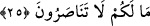

buyrulmuştur.
Zâlime dost olma ki sayılmayasın
Haşr günü onlara dahil olanlardan
Rivâyete göre İbn Mübarek rüyada görüldü ve kendisine rabbin sana ne muamele
yaptı diye soruldu. İbn Mübarek “Bir bid’at sahibine lütuf ve şefkatle nazar ettiğim için
Allah Teâlâ bana sitem etti ve beni üç sene tutukladı. Bana: “Sen benim düşmanıma
düşman olmadın!” buyurdu” dedi. Peki, ya hatırlatıldıktan sonra o zâlimler topluluğu ile
oturanın hali nicedir! “Âyetlerimiz hakkında ileri geri konuşmaya dalanları
gördüğünde, onlar başka bir söze geçinceye kadar onlardan uzak dur. Eğer şeytan
sana unutturursa, hatırladıktan sonra artık o zâlimler topluluğu ile oturma.” (el-
En’âm 6/68)
Ravza kitabında kişi fâsık kimsenin dâvetine icabet edebilir; ancak günah, zelle, hata
ve şüpheli şeylerden sakınma (verâ) konusundaki hassasiyet açısından bakıldığında ise
icabet etmemek daha doğrudur. Mâruf, öncü, örnek ve rehber konumunda olan birinin
bâtıl ehlinden birinin yanına sıkça gidip gelmesi ve insanlar arasında onun bu bâtıl işine
tâzim etmesi mekruhtur. Bâtıl ve bid’at ehline bu derece yumuşak ve tâzimkâr davranıp
senli-benli olan bu kimse de bid’at ehli olur. Bu kişinin bâtıl işinde ve bozuk îtikadında
insanların ona uymalarına ve o kişinin bâtıl ve bid’at olan işinin revaçta olmasına sebep
olur. Hulasa, nefs-i emmâre sahipleri ahlâk, fiil ve söz gibi sebeplerle dünyada
insanları cehennem yoluna delâlet ediyorlardı. Bundan dolayı da öldükleri hâl üzere
haşredileceklerdir. Yine sevap ve azapta beden ve ruhların ortak olmaları gibi bir günah
ve hata sahibine bu konuda yardım eden kimse de azapta ve yüce huzurdan kovulup
aşağılanmada o kimseye ortak olur. Allah Teâlâ’dan hitabıyla amel etmeyi, zâtına
teveccüh etmeyi, onun tevfikine girmeyi ve onun yoluna gitmeyi diliyoruz. Zira yardımcı
yalnız O’dur.
Ey melekler! “Onları” müşrikleri sırat köprüsünde “tutuklayın” durdurun “çünkü
onlar sorguya çekilecekler!” Müfessirler der ki, kâfirler mahşer yerinden cehenneme
doğru sevkedilince sırat köprüsünde durdurulurlar. Zira sorgulama sırat köprüsünde
olacaktır. İşte Allah Teâlâ kâfirlerin sıratta durdurulmalarına gerekçe olarak: “Onları
tutuklayın; çünkü onlar sorguya çekilecekler!” buyurmuştur.
25. Size ne oldu ki birbirinize yardım etmiyorsunuz?
“Size ne oldu ki birbirinize yardım etmiyorsunuz?” Bu sözün hakikati şudur: Ey
kâfirler! Niye yardımlaşmıyorsunuz? Dünyada inandığınız gibi birbirinizi azaptan